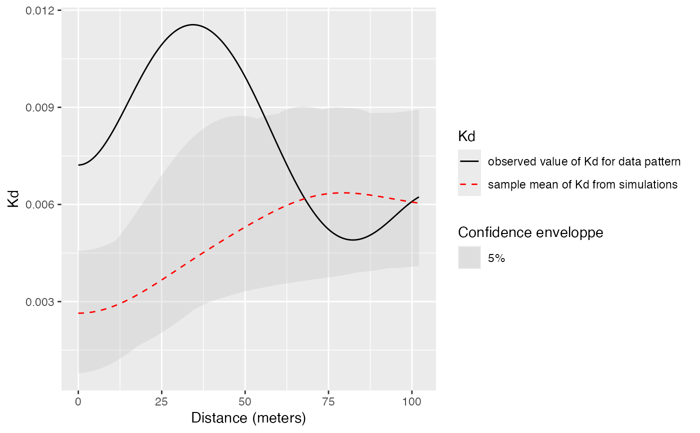
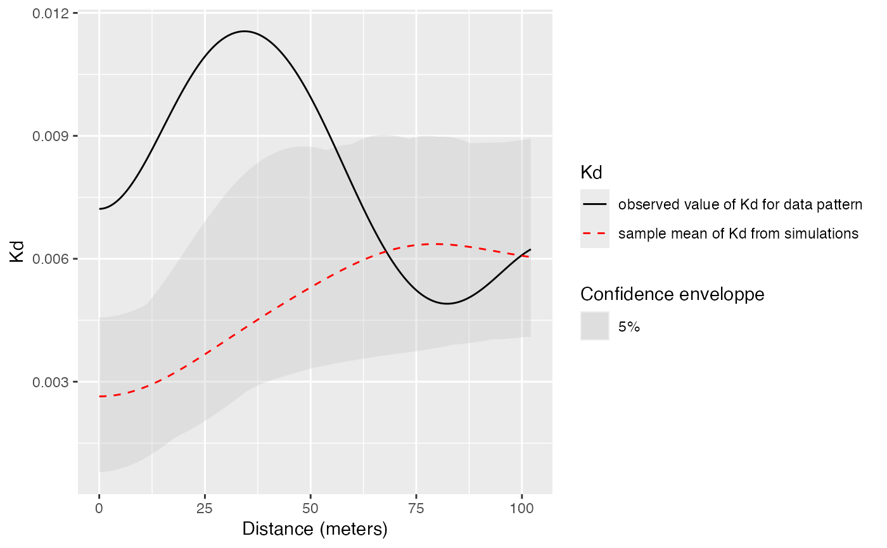

ggplot methods to plot dbmss objects
autoplot.RdS3 methods for the autoplot generic.
# S3 method for envelope
autoplot(object, fmla, ..., ObsColor = "black",
H0Color = "red", ShadeColor = "grey75", alpha = 0.3, main = NULL,
xlab = NULL, ylab = NULL, LegendLabels = NULL)
# S3 method for fv
autoplot(object, fmla, ..., ObsColor = "black",
H0Color = "red", ShadeColor = "grey75", alpha = 0.3, main = NULL,
xlab = NULL, ylab = NULL, LegendLabels = NULL)
# S3 method for wmppp
autoplot(object, ..., show.window = TRUE,
MaxPointTypes = 6, Other = "Other",
main = NULL, xlab = NULL, ylab = NULL, LegendLabels = NULL,
labelSize = "Weight", labelColor = "Type", palette="Set1",
windowColor = "black", windowFill = "transparent", alpha = 1)Arguments
- object
An object to be plotted.
- fmla
An R language formula determining which variables or expressions are plotted. Either a formula object, or a string that can be parsed as a formula. See
plot.fv.- ...
Extra arguments, currently unused.
- ObsColor
The color of the line representing observed values of the function.
- H0Color
The color of the line representing the null hypothesis values of the function.
- ShadeColor
The color of the confidence envelope.
- alpha
The opacity of the confidence envelope (in function values) or the points (in maps), between 0 and 1.
- main
The title of the plot.
- xlab, ylab
The axes labels.
- LegendLabels
A vector of characters. The first two items describe the observed and null-hypothesis curves, the third and last item the confidence interval. To be used only in plots with two curves (typically observed and expected values). The default is `NULL` to display the full description of functions.
- show.window
if `TRUE`, the borders of the window containing the points are shown on the point map.
- MaxPointTypes
The maximum number of different point types to show. If the point set contains more of them, the less frequent ones are gathered as "Other". This number must be limited for readability and not to exceed the number of colors offered by the palette.
- Other
The name of the point types gathered as "Other".
- labelSize
The guide of the point size legend in point maps, i.e. what the `PointSize` mark represents.
- labelColor
The guide of the point color legend in point maps, i.e. what the `PointType` mark represents.
- palette
The color palette used to display point types in maps. See
scale_colour_brewer- windowColor
The color used to draw the limits of the windows in point maps.
- windowFill
The color used to fill the windows in point maps.
Details
Plots of `wmppp` objects are a single representation of both point types and point weights.
Rectangular and polygonal windows (see owin.object) are supported but mask windows are ignored (use the `plot` method if necessary).
Value
A ggplot object.
Examples
data(paracou16)
# Keep only 20% of points to run this example
X <- as.wmppp(rthin(paracou16, 0.2))
autoplot(X)
 # Plot the envelope (should be 1000 simulations, reduced to 20 to save time)
autoplot(KdEnvelope(X, ReferenceType="Q. Rosea", NumberOfSimulations=20))
#> Generating 20 simulations by evaluating expression ...
#> 1, 2, 3, 4, 5, 6, 7, 8, 9, 10, 11, 12, 13, 14, 15, 16, 17, 18, 19, 20.
#>
#> Done.

# With a formula and a compact legend
autoplot(KEnvelope(X, NumberOfSimulations=20),
./(pi*r^2) ~ r,
LegendLabels=c("Observed", "Expected", "Confidence\n enveloppe"))
#> Generating 20 simulations by evaluating expression ...
#> 1, 2, 3, 4, 5, 6, 7, 8, 9, 10, 11, 12, 13, 14, 15, 16, 17, 18, 19, 20.
#>
#> Done.
# Plot the envelope (should be 1000 simulations, reduced to 20 to save time)
autoplot(KdEnvelope(X, ReferenceType="Q. Rosea", NumberOfSimulations=20))
#> Generating 20 simulations by evaluating expression ...
#> 1, 2, 3, 4, 5, 6, 7, 8, 9, 10, 11, 12, 13, 14, 15, 16, 17, 18, 19, 20.
#>
#> Done.

# With a formula and a compact legend
autoplot(KEnvelope(X, NumberOfSimulations=20),
./(pi*r^2) ~ r,
LegendLabels=c("Observed", "Expected", "Confidence\n enveloppe"))
#> Generating 20 simulations by evaluating expression ...
#> 1, 2, 3, 4, 5, 6, 7, 8, 9, 10, 11, 12, 13, 14, 15, 16, 17, 18, 19, 20.
#>
#> Done.